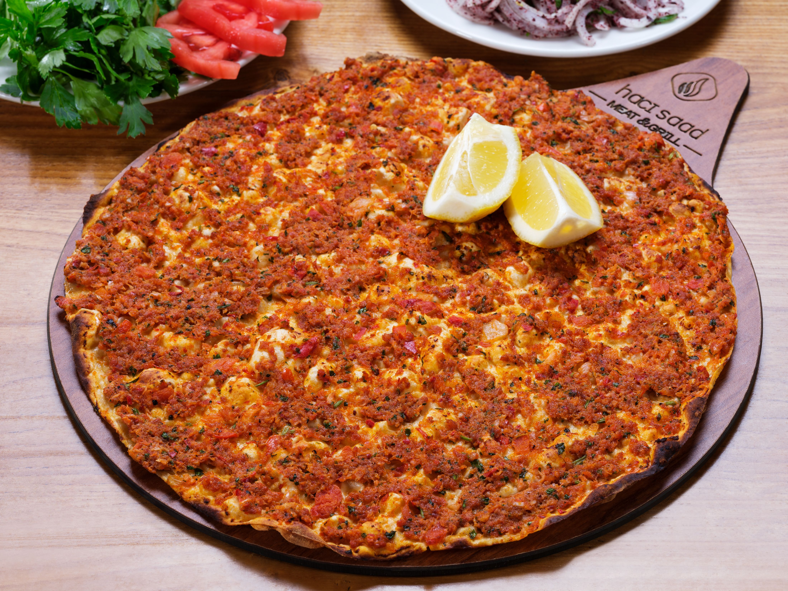

Lahmacun is usually topped with a spiced mixture of minced meat, vegetables, and herbs, often enjoyed rolled up with fresh herbs and a squeeze of lemon. It is sometimes referred to as Turkish pizza due to its shape and appearance however it does not contain cheese or tomato sauce.